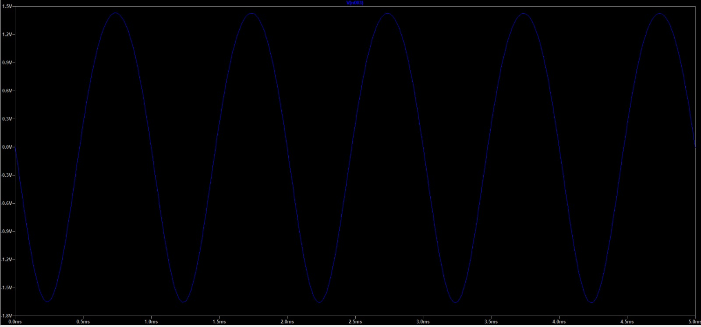

TransistorLab: From Silicon to Intelligence
"Transistors switch, gates compute, and adders perform arithmetic; the same transistor can amplify signals, while mathematical models demonstrate neuron behaviour."
Modern computing architectures originate from the precise manipulation of solid-state semiconductor physics. By leveraging the fundamental threshold characteristics of a single transistor, we synthesize elementary logic gates that aggregate to execute binary arithmetic. Remarkably, this exact physical substrate—when appropriately biased—operates interchangeably as a linear signal amplifier and a biological neuron emulator.
Digital Electronics: From Switching to Arithmetic
1.1 BJT Switching Dynamics & Transfer Curve
Piecewise Model: Vcc=5V, Rb=10kΩ, Rc=1kΩ, β=100Modulating the base-emitter terminal voltage (Vin) reveals discrete operational regimes: below 0.7 V the transistor is in high-impedance cutoff (Vout = 5.00 V); above 0.7 V it enters active conduction until saturating at VCE ≈ 0.20 V (Vin ≥ 1.18 V).
Hardware & LTspice Bench Verification
 🔍 Zoom Schematic
🔍 Zoom Schematic
 🔍 Zoom Simulation
🔍 Zoom Simulation
1.2 Topologies of Boolean Computation
Resistor-Transistor Logic (RTL)A single inverting BJT topology implements a NOT gate, series-configured channels yield conditional NAND logic, and parallel arrangements realize NOR operations. Observe the real-time physical conduction state of each semiconductor channel.
Physical Semiconductor Channels
1.3 Cascaded 4-Bit Binary Arithmetic
36 NAND Gates • 72 Transistors • 4 Full AddersChaining discrete full-adder cells facilitates multi-bit binary arithmetic. Intermediate carry bits propagate sequentially from LSB (Bit 0) to MSB (Bit 3), demonstrating temporal ripple progression.
Module 2: Analog Common-Emitter Amplifier
Title: Transistor Small-Signal Amplification & Non-Linear Rail Clipping
BJT CE Active-Region Dynamics • Supply Rails: VCC & GNDThe common-emitter (CE) configuration operates as an active-region voltage amplifier, using small-signal base current variations to modulate a significantly larger collector current through the load resistance
Governed by the transconductance (gm) of the BJT and the effective load impedance, determining the dynamic scaling factor applied to input signal oscillations.
Av = −gm · (RC ∥ RL) = −(IC / VT) · (RC ∥ RL)
Physical supply boundaries (VCC and GND) constrain the maximum output excursion. Driving the base beyond linear operating limits forces the collector voltage into saturation or cutoff, resulting in non-linear waveform distortion known as rail clipping.
VCE,sat ≤ vout(t) ≤ VCC → Cutoff Ceiling / Saturation Floor
Hardware & LTspice Bench Verification
 🔍 Zoom Schematic
🔍 Zoom Schematic
 🔍 Zoom Waveform
🔍 Zoom Waveform

🔍 Zoom WaveformModule 3: Neural & Biophysical Models
Title: Static Artificial Abstractions vs. Biophysical LIF Dynamics
Static Rate Model vs. Temporal RC ElectrodynamicsThis module contrasts rate-based mathematical abstractions with temporal biophysical membrane electrodynamics:
Artificial Neuron (Static Rate Model)
Evaluates an affine transformation (z = wTx + b) projected through a deterministic activation function.
H(z) = 1 (if z ≥ 0), 0 (if z < 0)σ(z) = 1 / (1 + e−z)Leaky Integrate-and-Fire (LIF Model)
Models the sub-threshold membrane dynamics of a biological neuron using an equivalent RC circuit. Integrated via Euler steps, the membrane potential (v) continuously dissipates charge through passive leakage while integrating input currents. When potential reaches the threshold voltage (vth), the system fires a discrete action potential and resets to baseline.
C · (dv/dt) = I(t) − (v / R)
v(t + Δt) = v(t) + (Δt / C) · [I(t) − v(t) / R]
If v(t) ≥ vth → Spike Event δ(t), v ← 0 V
3.1 Artificial Perceptron: Dot Product & Activation Function
y = f(wTx + b)3.2 Biophysical LIF Spiking Dynamics & Euler Integration
RC Membrane Electrodynamics • Passive Leakage & Action PotentialsValidation Matrix: Theory vs. Models
| Circuit Test | Analytical / Hand Calc | JavaScript Simulation | Benchmark Status |
|---|---|---|---|
| BJT Inverter Turn-on | Vin = 0.70 V | 0.70 V (cutoff to active) | Verified Match |
| BJT Inverter Saturation | Vin ≈ 1.18 V (VCE = 0.20 V) | 1.18 V (saturation clamped) | Verified Match |
| 4-Bit Adder (36 NAND) | Truth table addition (0–30 range) | Bit-exact NAND propagation | Verified Match |
| CE Midband Gain (Degenerated) | |Av| ≈ RC / RE = 4.70 | 4.70 (Inverted phase 180°) | Verified Match |
| CE Small-Signal Gain (Bypassed) | |Av| = gm · (RC ∥ RL) ≈ 159.1 | 159.1 (LTspice waveform ≈ 150) | Verified Match |
| LIF Constant Firing Period | T = RC · ln[IR / (IR − Vth)] | Euler numerical integration | Verified Match |